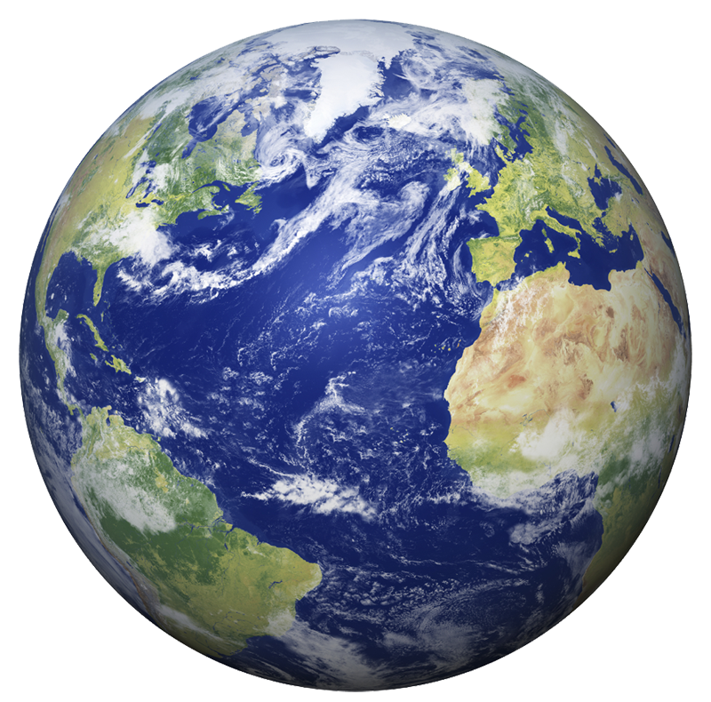
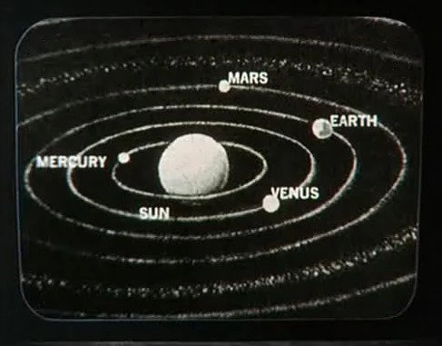

Earth
Earth, also known as Sol III or Terra, was the inhabited third planet of the Sol system. Earth was the homeworld of the Humans and the Voth, among others, and was the capital planet of the United Federation of Planets and the home of Starfleet Headquarters from 2161 to 3089. In 2150, with the last countries joining, the planet was unified under the United Earth government. It was a founding member of the Coalition of Planets in 2155, and of the United Federation of Planets in 2161. For those that want to know more

Location
Earth's orbit around its sun, Sol, measured more than two hundred million kilometers in diameter.Earth was located in the Alpha Quadrant, less than ninety light years from the boundary to the Beta Quadrant.It was a little over sixteen light years away from the planet Vulcan
